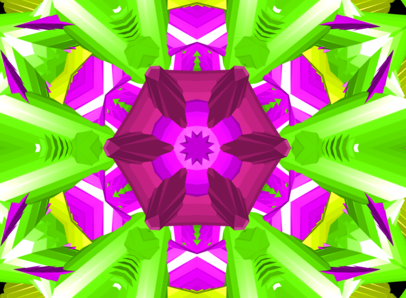
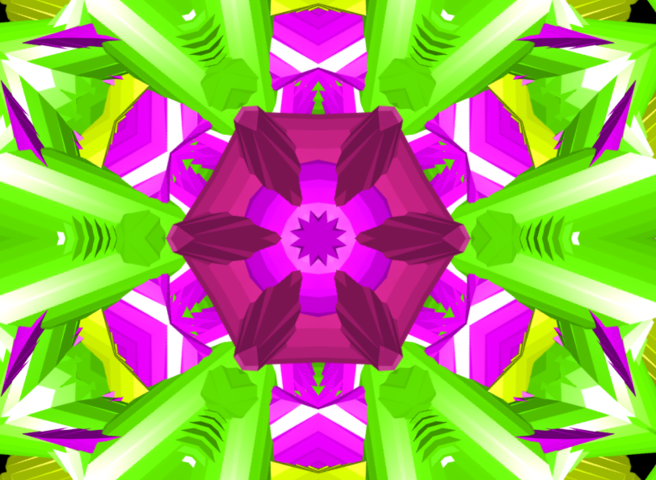

Partículas
Experiencia visual generativa basada en GPU y comportamiento orgánico.
Caleidoscopio
Exploración geométrica y cromática en tiempo real.
Experiencia visual generativa basada en GPU y comportamiento orgánico.
Exploración geométrica y cromática en tiempo real.